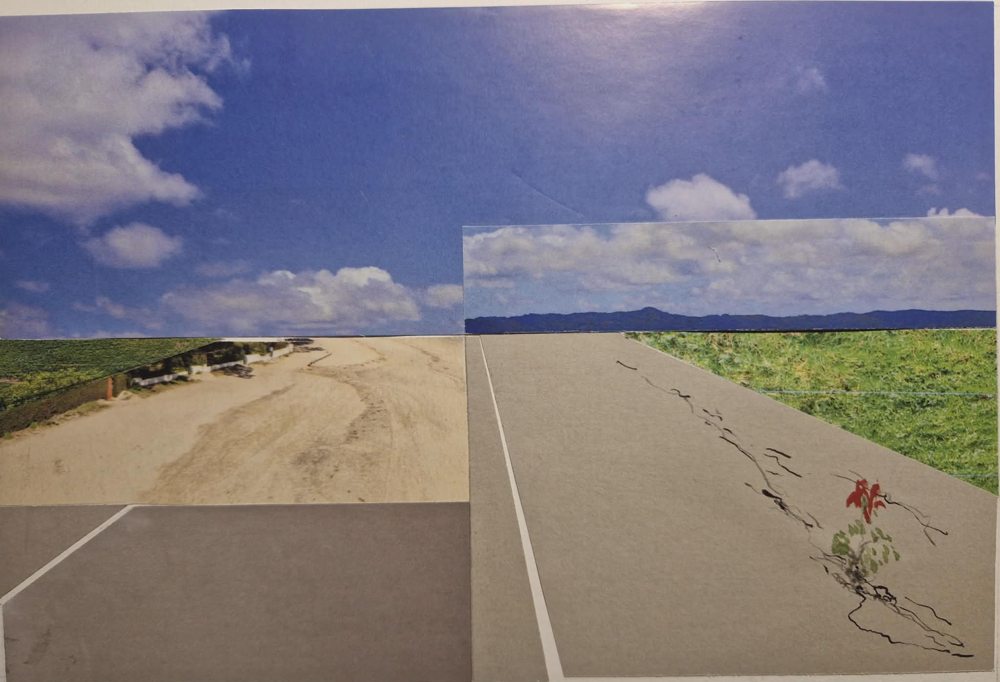

Casa Donatalina nasce da una famiglia di lettori, medici, attivisti, narratori e curiosi.
Crediamo nelle storie vere.
Nella memoria.
Nei libri che continuano a vivere anche dopo l'ultima pagina.
Qui trovano spazio romanzi, memoir, recensioni e riflessioni sulla letteratura.